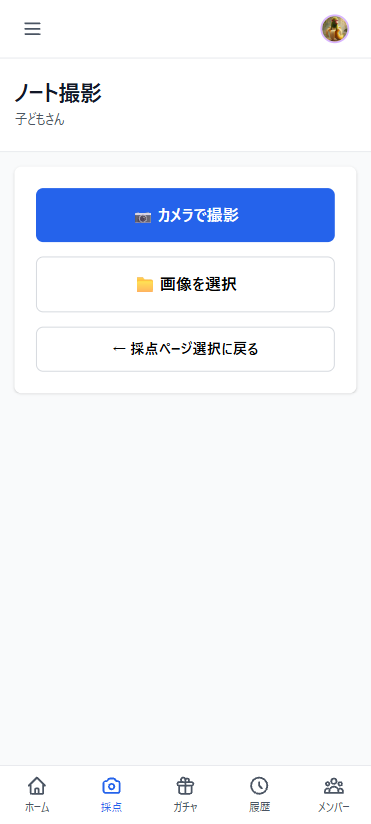
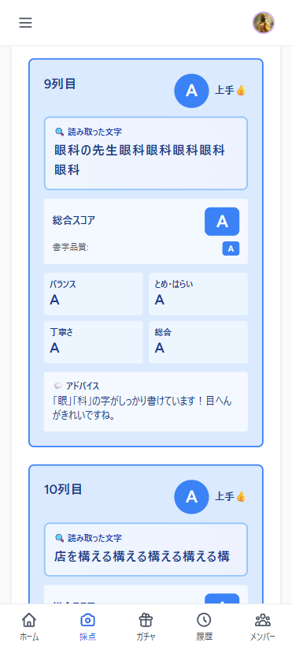
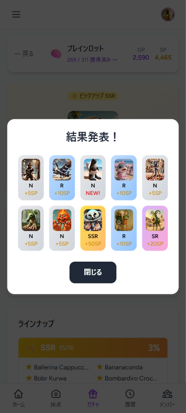

漢字ドリル
AI採点アプリ
子どもが書いた漢字の手書き画像をアップロードするだけで、AIが自動採点。正誤だけでなく「どこが違うか」まで具体的なフィードバックを返す教育向けWebアプリ。
demo / screenshot




overview
PROBLEM
漢字練習の採点は保護者の手作業。枚数が多いと確認が追いつかず、間違いを見逃しやすい。子どものモチベーション維持も課題
SOLUTION
ドリルを撮影してアップロードするだけでClaude APIが自動採点。採点結果で経験値・ポイントを獲得しレベルアップ。ガチャで継続的な学習をサポート
TARGET USER
小学生の子どもを持つ保護者。親子アカウント制で保護者が子どもの学習状況を管理。承認制ユーザー登録で知人限定運用
PLATFORM
Webアプリ（スマホ撮影→アップロード対応。Xserverで本番稼働中）
features
撮影・アップロードで即採点
スマホでドリルを撮影してアップロードするだけ。Claude APIが手書き文字を画像認識し、マス目ごとに正誤を判定。採点とフィードバック生成を一括処理。
文字・行・列単位のスコア表示
総合スコア・文字正確性・書字品質を数値で提示。どの文字が何点かを行列形式で一覧表示し、間違えた箇所を直感的に把握できる。
経験値・レベルアップ
採点結果に応じて経験値とポイントを獲得。蓄積するとレベルアップし、子どもの成長を可視化。練習を続けるほどキャラクターが強くなる仕組みでモチベーションを維持。
ガチャシステム
獲得したポイントでガチャを引いて報酬を獲得。練習の継続に対するご褒美として機能し、「もう1回やってみよう」という動機づけをゲームで実現。
親子アカウント制
保護者アカウントで複数の子どもを管理。子どもは自分のダッシュボードで練習・採点。承認制ユーザー登録で知人限定の安全な運用が可能。
管理画面
全ユーザーの採点履歴を一元管理。ユーザー承認・スタンプ設定のカスタマイズが管理画面から操作可能。フィルタ・ソート・ページネーション対応。
tech stack
Laravel / PHP
React / TypeScript
Inertia.js
Claude API（画像認識・採点）
AWS S3（画像保存）
Laravel Socialite（Google認証）
MySQL 8.0
Tailwind CSS
Docker Compose
Xserver
technical notes
当初はGoogle Cloud Vision APIでOCRを実装したが、精度が不十分だったためClaude APIに切り替え。手書き漢字の画像をそのままClaude APIに渡し、文字認識と採点・フィードバック生成を一括で行う構成に変更した。精度が大幅に改善し、縦書きドリルの認識も安定した。
Xserverなどキューワーカーが使えない環境でも動作するよう、ignore_user_abort(true)による疑似バックグラウンド処理（syncモード）とLaravel Queue（queueモード）を切り替えできる設計にした。画像ファイルはAWS S3に保存。
ゲーミフィケーション機能は経験値・レベル・ポイント・ガチャの4軸で構成。採点完了後に自動で経験値とポイントが付与され、レベルアップ判定・ガチャ報酬の抽選まで一連のフローを処理する。